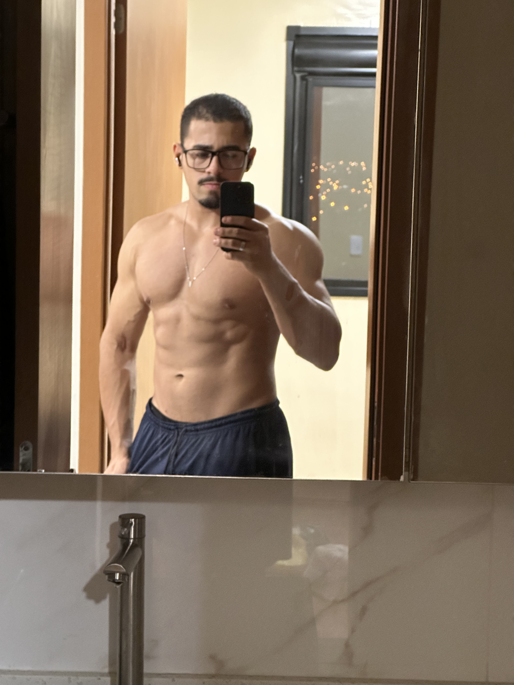
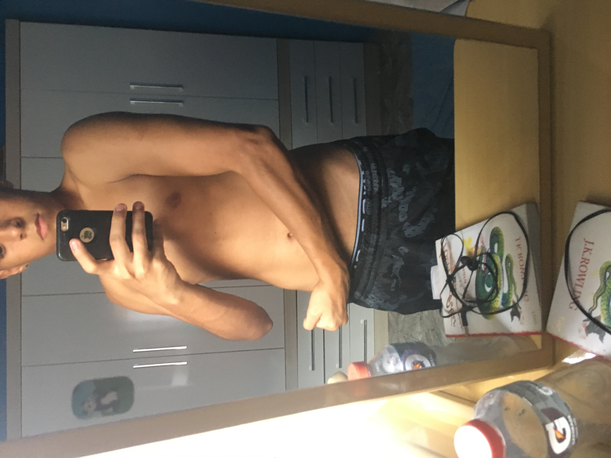
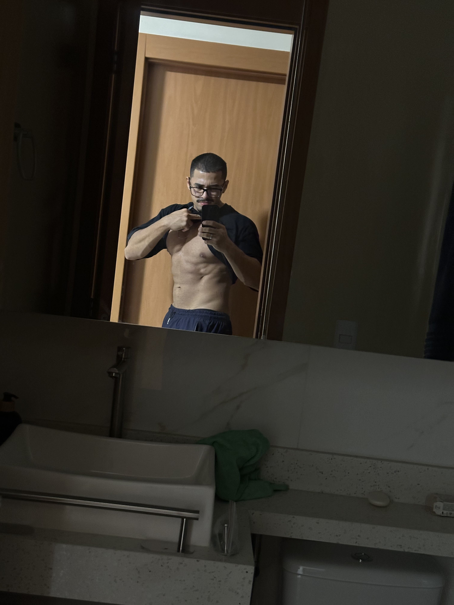
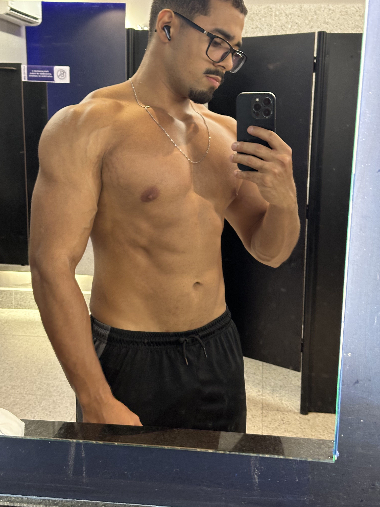

Meu nome é Kevin Lincoln. Sou nutricionista clínico e esportivo (CRN: 83678P), graduado pela UNIP. Acredito que a alimentação deve ser um pilar de liberdade e saúde — nunca de sofrimento ou culpa.
Antes de orientar pacientes, precisei passar pela minha própria transformação. Fui atleta de fisiculturismo e vivi na prática as dificuldades de equilibrar disciplina nutricional com rotina real. Essa vivência moldou minha forma de atender: com rigor científico e profunda compreensão humana.
Não estava satisfeito com meu físico e me sentia desmotivado. Ao me aprofundar nos estudos da bioquímica e da nutrição esportiva, percebi que pequenas mudanças estratégicas nos macronutrientes geravam impactos gigantescos no humor, energia e composição corporal. Essa descoberta virou obsessão — e depois, missão.
Cada paciente que chega até mim carregando frustrações, dietas fracassadas ou falta de direção, eu consigo entender. Porque já estive no mesmo lugar. E saber exatamente o que funciona — e por quê — é o que diferencia um acompanhamento que transforma de um que apenas prescreve.

Início dos Estudos
Disciplina Diária
ConsistênciaO esporte de alto rendimento exige precisão milimétrica. Não basta treinar com intensidade: é necessário dosar cada grama de proteína, ajustar a hidratação e respeitar o descanso fisiológico.
Essa experiência prática me deu a bagagem para entender exatamente como o corpo humano responde a cada estratégia. Esse rigor científico é o que aplico no atendimento diário, adaptando o nível de exigência à realidade de cada pessoa.
Foi dessa vivência que nasceu o Método Atlas: uma estrutura nutricional construída com base em princípios de alta performance, mas aplicada de forma humana e sustentável para qualquer pessoa, independente do ponto de partida.
Conhecer o Método Atlas →
Princípios inegociáveis para uma relação de confiança e resultados duradouros.
Você é ouvido. Suas preferências de paladar, restrições e dificuldades de rotina são a base para construir o cardápio.
Alimentos não são proibidos de forma arbitrária. A estratégia foca no equilíbrio total e na criação de consistência.
O trabalho não termina na entrega da dieta. Estar presente durante o processo é o segredo para ajustar desvios e garantir evolução.
 Nutri
Nutri